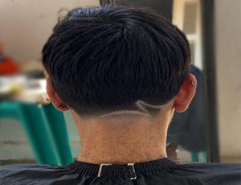
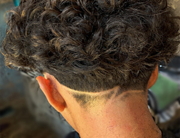
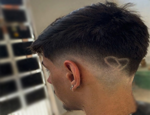
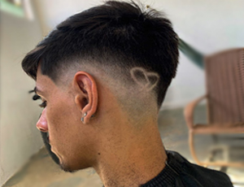
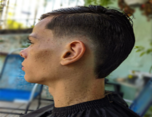
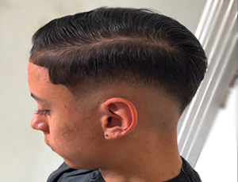

AMERICANO
O corte americano é um visual masculino com inspiração militar e laterais em degradê Também conhecido como fade hair, é um modelo de cabelo masculino curto que é caracterizado por suas laterais curtas e graduadas..


DO JACA
O Corte do Jaca tem como característica um sombreado mais denso e majoritariamente o Mid Fade. De acordo com a barbeira Giliane Coviack, o estilo foi criado na comunidade do Jacarezinho, no RJ, por isso o nome Corte do Jaca.


MOICANO
Moicano é um corte de cabelo de origem indígena que era usado pelos povos moicanos. O estilo caracteriza-se por possuir uma "crista" no meio da cabeça